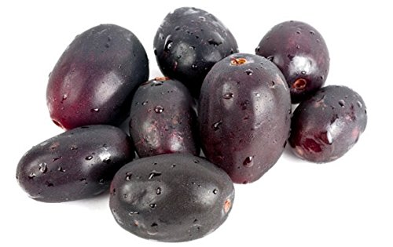

Jamun fruit, which is known in Tamil as Naaval Pazham, Nagapazham, Nagapalam and Naavalpalam. It is also called as Java Plum, Black Plum, Jambul and Indian blackberry.Jamun, the highly nutritious, refreshing and succulent fruit flooding the summer markets has innumerable health benefits. Commonly known as Java plum or Indian blackberry in English, Jamun or Jambul in Hindi, Jambufalam or Mahaphala in Sanskrit, Naavar Pazham in Tamil and Neredu in Telugu, it goes by the botanical name Syzygium cumini. Jamun, the tall tree with a heavy trunk is native to the Indian sub-continent but is also widely found in various Asian countries. The tree bears fruits which are oblong in shape – that are green when raw but turn pink or purple as they ripen. This juicy fruit holds a great significance in holistic treatments like Ayurvedic, Unani and Chinese medicine as it attenuates Kapha and Pitta.
The Latin name of the strawberry used in science is Fragaria × ananassa. Fragaria is the name of the genus of "strawberry-like" plants. The × mark means that it is a hybrid, a mix of two other species. The Latin name ananassa says the hybrid is "pineapple-like". The strawberry is sometimes called the "garden strawberry" so that people don't mix it up with the other wild strawberries of the genus Fragaria. The name is a bit misleading and is special to English. The other Germanic languages do not have a name like it. No one is really sure where the name came from.[1] The plant is not a kind of straw, and its fruit is not really a berry.
People have eaten different kinds of wild strawberries for thousands of years. Today's bigger strawberry was first made around Brest in Brittany (northwest France) in the 1750s. It was made by joining the Virginia strawberry from eastern North America to the European Hautbois and the Chilean strawberry from western South America.[2]
Most strawberries are grown on farms. Strawberry farmers often have bees in hives. The bees pollinate the strawberries. Strawberry stems are called runners. They grow above ground. They are a type of stolon.[3].The name is a bit misleading and is special to English. The other Germanic languages do not have a name like it.the tall tree with a heavy trunk is native to the Indian sub-continent but is also widely found in various Asian countries. The tree bears fruits which are oblong in shape – that are green when raw but turn pink or purple as they ripen.
apple, (Malus domestica), domesticated tree and fruit of the rose family (Rosaceae), one of the most widely cultivated tree fruits. Apples are predominantly grown for sale as fresh fruit, though apples are also used commercially for vinegar, juice, jelly, applesauce, and apple butter and are canned as pie stock.
The apple is thought to have been domesticated 4,000–10,000 years ago in the Tian Shan mountains, and then to have travelled along the Silk Road to Europe, with hybridization and introgression of wild crabapples from Siberia (M. baccata), the Caucasus (M. orientalis), and Europe (M. sylvestris). Only the M. sieversii trees growing on the western side of the Tian Shan mountains contributed genetically to the domesticated apple, not the isolated population on the eastern side.[23] Chinese soft apples, such as M. asiatica and M. prunifolia, have been cultivated as dessert apples for more than 2,000 years in China. These are thought to be hybrids between M. baccata and M. sieversii in Kazakhstan.[23]